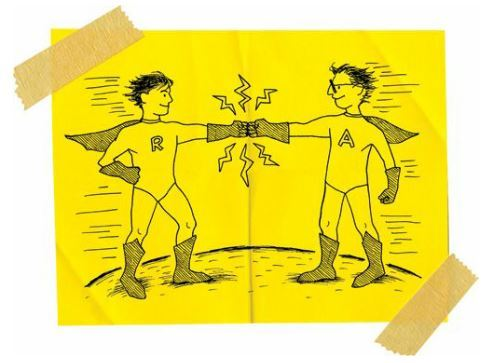

Thanksgiving
It was a snowless Thanksgiving.
We had a turkey, and Mom cooked it perfectly.
We also had mashed potatoes, gravy, green beans, corn, cranberry sauce, and pumpkin pie. It was a feast.
I always think it’s funny when Indians celebrate Thanksgiving. I mean, sure, the Indians and Pilgrims were best friends during that first Thanksgiving, but a few years later, the Pilgrims were shooting Indians.
So I’m never quite sure why we eat turkey like everybody else.
“Hey, Dad,” I said. “What do Indians have to be so thankful for?”
“We should give thanks that they didn’t kill all of us.”
We laughed like crazy. It was a good day. Dad was sober. Mom was getting ready to nap. Grandma was already napping.
But I missed Rowdy. I kept looking at the door. For the last ten years, he’d always come over to the house to have a pumpkin-pie eating contest with me.
I missed him.
So I drew a cartoon of Rowdy and me like we used to be:

Then I put on my coat and shoes, walked over to Rowdy’s house, and knocked on the door.
Rowdy’s dad, drunk as usual, opened the door.
“Junior,” he said. “What do you want?”
“Is Rowdy home?”
“Nope.”
“Oh, well, I drew this for him. Can you give it to him?”
Rowdy’s dad took the cartoon and stared at it for a while. Then he smirked.
“You’re kind of gay, aren’t you?” he asked.
Yeah, that was the guy who was raising Rowdy. Jesus, no wonder my best friend was always so angry.
“Can you just give it to him?” I asked.
“Yeah, I’ll give it to him. Even if it’s a little gay.”
I wanted to cuss at him. I wanted to tell him that I thought I was being courageous, and that I was trying to fix my broken friendship with Rowdy, and that I missed him, and if that was gay, then okay, I was the gayest dude in the world. But I didn’t say any of that.
“Okay, thank you,” I said instead. “And Happy Thanksgiving.”
Rowdy’s dad closed the door on me. I walked away. But I stopped at the end of the driveway and looked back. I could see Rowdy in the window of his upstairs bedroom. He was holding my cartoon. He was watching me walk away. And I could see the sadness in his face. I just knew he missed me, too.
I waved at him. He gave me the finger.
“Hey, Rowdy!” I shouted. “Thanks a lot!”
He stepped away from the window. And I felt sad for a moment. But then I realized that Rowdy may have flipped me off, but he hadn’t torn up my cartoon. As much as he hated me, he probably should have ripped it to pieces. That would have hurt my feelings more than just about anything I can think of. But Rowdy still respected my cartoons. And so maybe he still respected me a little bit.